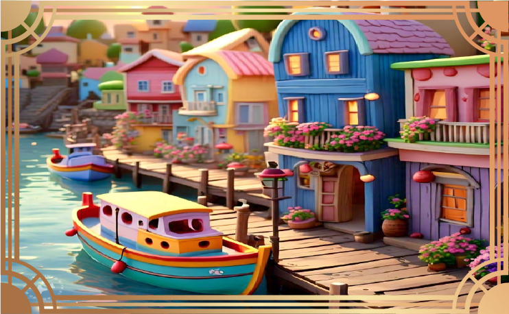

Theron the Fisherman
"The ocean tells stories, and I’ve learned to listen."
Personality: Wise, Patient, Calm, Resourceful
Character Stats:
- Strength: 80%
- Endurance: 95%
- Wisdom: 100%
- Fishing Skill: Master
- Survival Instinct: High
About Theron
Theron is a seasoned fisherman with decades of experience navigating the unpredictable seas. He knows the tides, the currents, and the patterns of marine life as if they were part of his soul. His deep wisdom and calm demeanor make him a leader among his peers.
Personality Traits
Theron is a figure of immense wisdom and patience. His calm demeanor and resourcefulness have earned him respect among his peers. As a fisherman, his deep connection with the ocean allows him to understand its moods and secrets, making him a valuable guide and mentor.
Chapters

Chapter 1: The Call of the Sea
Chapter 2: The Storm Approaches
Chapter 3: Into the Depths